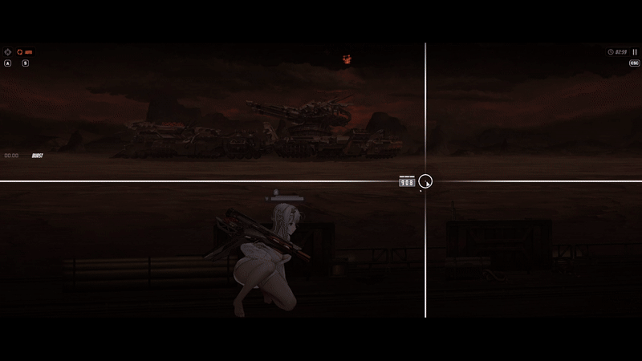
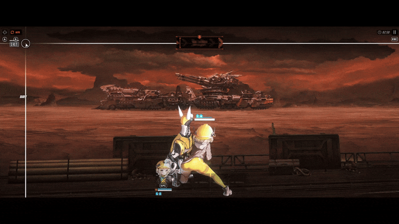
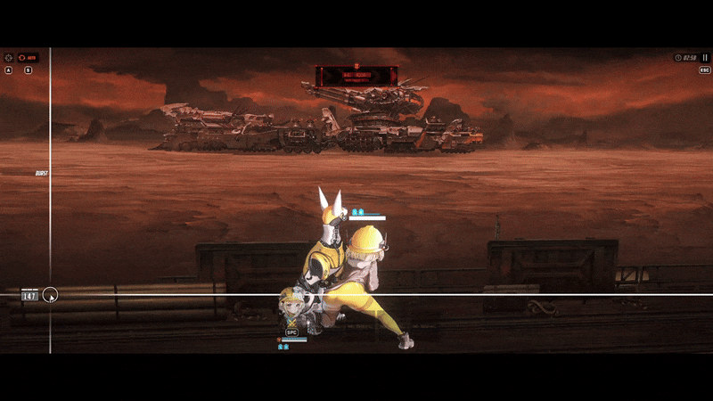
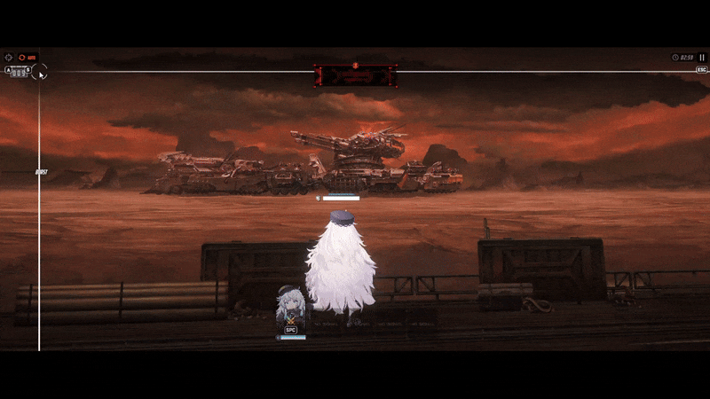
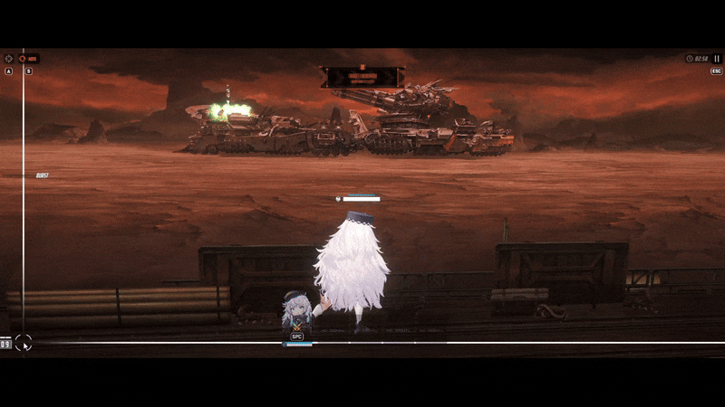
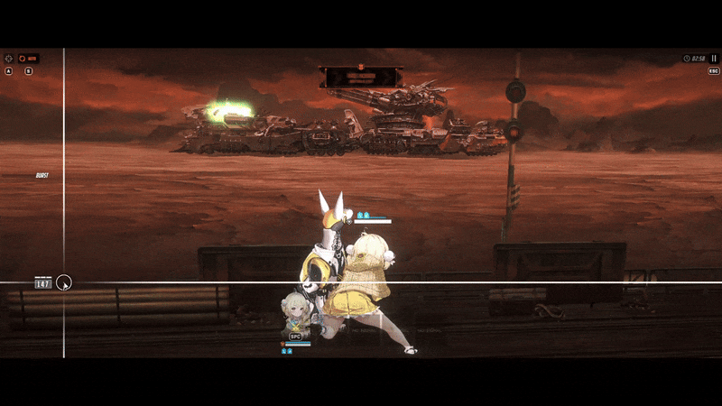
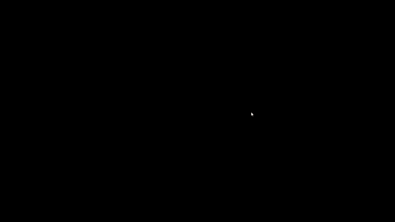
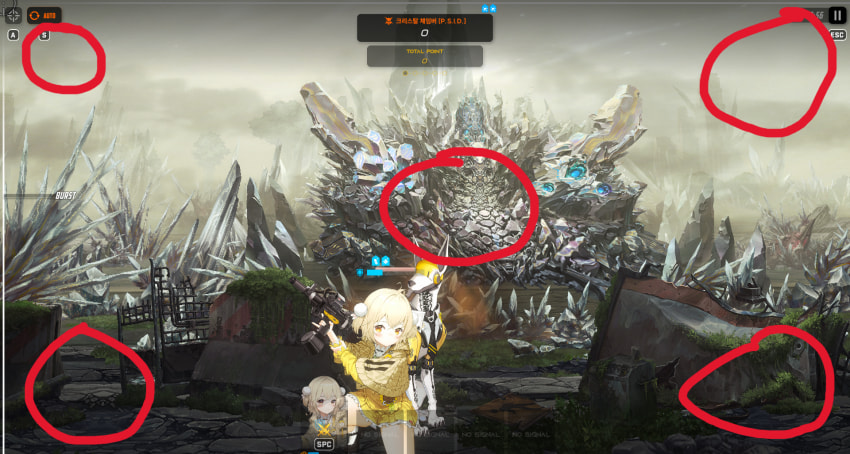

알트아이젠 리타로 분명 태보가 안됬는데 지금은 된다는 글 보고 실험해본 것들임
@ 지금까지 알려진 태보 상식 @
태보는 되는캐릭이 있고 안되는 캐릭이 있는걸로 알려져있다
정확히 설명하면
조준할때 날라온 투사체만 태보가 되는 캐릭이 있고
엄폐할때 조준으로 피해도 태보가 되는 캐릭이 있음 (이런 캐릭은 조준할때 날라온 투사체도 회피 가능 예)노이즈))
뚱뚱한 캐릭 얇은 캐릭 상관없이
조준과 엄폐의 위치가 많이 벌어지는 캐릭이 태보가 되는 캐릭임
예)

모더니아는 뚱캐지만 조준과 엄폐할때 양 옆으로 많이 움직여서 태보가 가능하고
폴리는 조금만 움직이기 때문에 폴리는 태보가 불가능 한거임
두 캐릭 머리 위치를 잘 보면 체감이 될거임
근데 실험을 해보면서 이게 태보의 전부가 아니라는걸 깨달음
리타는 태보가 안되는 캐릭의 대표 캐릭터임 하지만

에임을 왼쪽 위로 두니까 태보가 됨
그럼 에임을 왼쪽 밑으로 두면 어떨까?

안된다
에임을 어디다 두냐에 따라서 태보가 되고 안되고 차이가 있음을 알수있음
근데 에임을 왼쪽 위에다가 두는게 태보가 가장 잘 되냐?
그건 또 아님

폴리는 왼쪽 위에다가 에임을 두고 태보를 하면 처맞지만

왼쪽 밑에다 두면 또 안맞는다
리타하고 완전 반대임
근데 여기서 진짜 재밋는건

리타 스킨을 끼고 에임을 왼쪽 아레에 두면 또 피해진다
스킨 차이가 생각보다 심한데 그 예시로
노스킨 리타는 오토로 치다가 엄폐하면 미사일을 처맞지만

스킨 리타는 오토로 두다가 엄폐해도 미사일을 안맞는다
여기까지 실험하면서 어? 혹시나 싶어서 솔레로 달려가서 큰 수정 태보 실험을 해봤음

하지만 아무리 스킨을 낀 리타여도
빨간원 부분 모두에임을 두면서 태보를 해봐도
태보는 안되더라
그렇다는건 태보는 단순히 에임위치, 스킨 차이가 아니더라도
투사체의 두께도 영향을 받는다는걸 알수있음
번외)
노아도 태보가 안되는 캐릭인데
미사일은 태보 되더라 아마 미사일 투사체가 작기 때문인듯
그리고 노아는 조준, 엄폐할때 양 옆으로 움직이는게 아니라
위, 아래로 움직임 그래서 태보가 잘 안되는것
3줄요약)
에임 위치에 차이로
투사체 두께 차이로
스킨에 차이로 태보가 되고 안되고 바뀔수도 있다